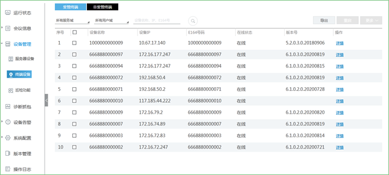
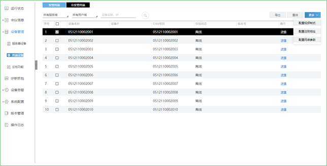
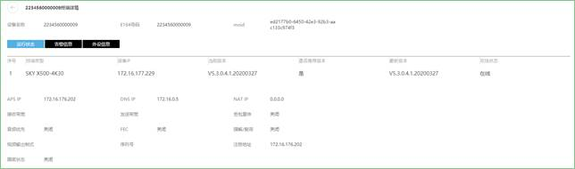
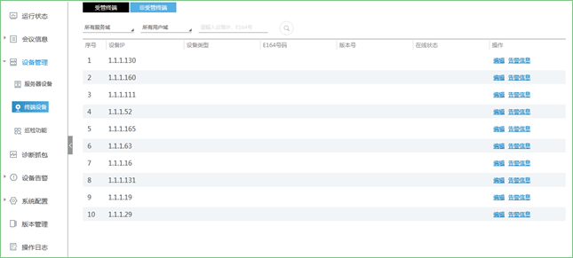
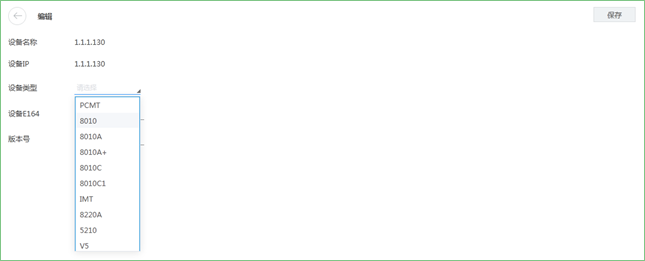
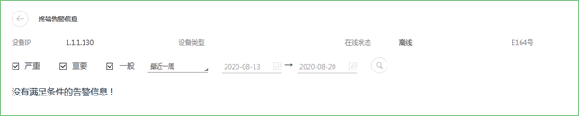

终端设备包含受管终端和非受管终端，受管终端是指5.0版本以后的终端类型，非受管终端是指账号管理系统中“添加设备”内的地址。

受管终端
受管终端，显示受管平台所管辖的终端。可在此界面配置视频模式、配置注册地址、配置网络参数、重启终端和导出终端信息。

 配置视频模式：选择主流第一路输出制式；
配置视频模式：选择主流第一路输出制式；
 配置注册地址：填写注册平台地址，但需符合IPV4/IPV6格式；
配置注册地址：填写注册平台地址，但需符合IPV4/IPV6格式；
 配置网络参数：选择开启或关闭丢包重传、音频优先、FEC、强解/载荷自适应；
配置网络参数：选择开启或关闭丢包重传、音频优先、FEC、强解/载荷自适应；
 重启：选择需要重启的硬终端，弹出提示“是否重启选中的终端”；
重启：选择需要重启的硬终端，弹出提示“是否重启选中的终端”；
说明：
支持6.0SP4及以上的终端，系统重启预计需要十分钟，在升级途中请勿断电。
 导出：导出终端的信息文件，可选择直接打开或保存至本地。
导出：导出终端的信息文件，可选择直接打开或保存至本地。
点击设备条目的详情，查看终端的运行状态，告警信息以及外设信息。

非受管终端
非受管终端，显示非受管平台所管辖的终端。

点击编辑，可以选择设备类型，填写设备E164号以及版本号，完成后点击【保存】。

点击告警信息，查看该设备的详细信息，选择时间，点击 ，可以快速搜索。
，可以快速搜索。
